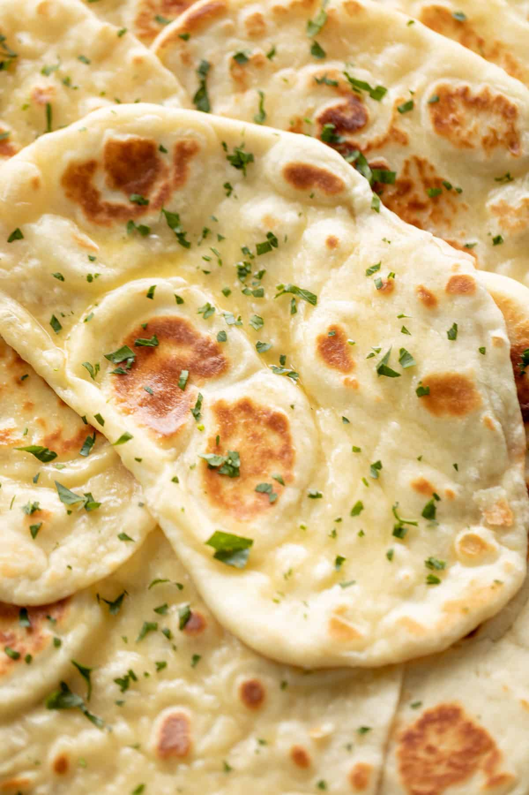

Home
Soft Naan Bread

Description
A traditional flat bread from India, naan breads are normally baked inside hot Tandoor ovens with charcoal or wood fire. They cook on the inner walls of the oven at a very high heat of up to 900°F. The breads fill with air pockets and cook perfectly.
Not just a flat bread, naan is just incredible! The pillowy soft bread is so addictive and perfect for mopping up curries, you’ll find it hard to stop at one! Our quick and easy recipe that will become your new favorite yeast bread recipe!
Ingredients
- 1/4 cup warm water
- 2 teaspoons granulated sugar
- 1 1/2 teaspoons active dry yeast, or instant (rapid rise)
- 3/4 cup warm milk
- 3/4 cup plain Greek yogurt, or natural plain yogurt
- 1/4 cup vegetable oil, plus 2 tablespoons extra for cooking
- 4 cups plain flour plus extra for dusting -- (19 1/2 oz. or 560g)
- 1 teaspoon baking powder
- 1 teaspoon salt
Garlic Topping
- /4 cup butter, melted (optional)
- 2 cloves garlic, minced
- 1 teaspoon fresh chopped cilantro or parsley